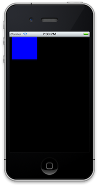
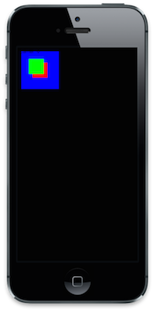

Views
Now that we've gotten a project running, let's start putting things on the screen.
The "stuff" that's displayed in an app are called "views". A view can have many "subviews"; when you move a view, you also move its subviews. Subviews are also visually stacked on top of each other within their parent.
In code, these are UIView objects; everything you see on the screen is a descendent of UIView. They have a lot of nifty features, but what you should be concerned about right now is that they have:
- A
frameproperty, which contains a view'sxandycoordinates and itswidthandheightdimensions. - A
subviewsproperty, which is an array of all the view's subviews, sorted by back-to-front visibility (as in the index of a view insubviewsis its "z-order").
A view's frame describes its shape and position relative to its parent view. That's a lot of words, so let me show you a quick example: imagine I have a view at (10, 10). I want a new subview of that view to appear at (50, 50) on the screen, so I have to set my new view's frame to be positioned at (40, 40). Make sense?
The base view of an app is the "window"; all other views are direct or descendent subviews of the window. Your app's window is a subclass of UIView called UIWindow.
Let's get to some code. In AppDelegate, change our didFinishLaunching method to look like:
def application(application, didFinishLaunchingWithOptions:launchOptions)
# UIScreen describes the display our app is running on
@window = UIWindow.alloc.initWithFrame(UIScreen.mainScreen.bounds)
@window.makeKeyAndVisible
@blue_view = UIView.alloc.initWithFrame(CGRectMake(10, 10, 100, 100))
@blue_view.backgroundColor = UIColor.blueColor
@window.addSubview(@blue_view)
true
end
Let's walk this out. We create a UIWindow instance with the dimensions of the screen and do something called makeKeyAndVisible. This basically tells the OS that this window will be the one receiving touch events and that it should become visible on the screen. (if you're curious, you can have multiple windows on multiple screens, but let's take it one small step at a time).
So we create a window, then we create a new view and add it as a subview to the window. The view's frame is actually stored as a CGRect object, generated using CGRectMake(x, y, w, h). BUT WATCH OUT! A CGRect is actually a composition of two objects: a CGPoint and CGSize. So if you want to read the y-coordinate or height of a view, you do view.frame.position.y or view.frame.size.height.
Also shown is UIColor, which is how we play with...colors. It has some obvious defaults (blueColor, redColor, etc), but can also be used to create arbitrary tints.
FULL DISCLOSURE: adding lone UIViews directly to the UIWindow is generally not a great idea and is frowned upon, but it's a nice way to learn. So don't do it in production code.
Run our app (just rake, remember?) and observe our...blue box.

Let's make it more exciting by...adding more boxes! Like so:
...
@blue_view = UIView.alloc.initWithFrame(CGRectMake(10, 10, 100, 100))
@blue_view.backgroundColor = UIColor.blueColor
@window.addSubview(@blue_view)
@green_view = UIView.alloc.initWithFrame(CGRectMake(30, 30, 40, 40))
@green_view.backgroundColor = UIColor.greenColor
@window.addSubview(@green_view)
@red_view = UIView.alloc.initWithFrame(CGRectMake(30, 30, 40, 40))
@red_view.backgroundColor = UIColor.redColor
# NOTE: *not* adding to @window
@blue_view.addSubview(@red_view)
...
rake again and a-ha! See how the red view is further down than the green view, despite seemingly identical frames?

Just for fun, let's play with our interactive REPL. The terminal where you ran rake should be displaying an irb-esque prompt while the simulator is open. Let's dig around and find our @blue_view:
> delegate = UIApplication.sharedApplication.delegate
=> #<AppDelegate>
> blue_view = delegate.instance_variable_get('@blue_view')
=> #<UIView>
What did we do there? Well UIApplication.sharedApplication gives us the object the system uses to describe our application. There will only ever be one of these. Like I said earlier, it's been configured to use our delegate, which is found (conveniently, I know) with .delegate. Once we grab that, we simply use the nifty instance_variable_get to retrieve our view.
We can confirm that the view has one subview with blue_view.subviews.count. Let's grab our red_view and do something maniacal: remove it.
> blue_view.subviews.count
=> 1
> red_view = blue_view.subviews[0]
=> #<UIView>
> red_view.removeFromSuperview
=> #<UIView>
"Whoa" there Neo, it disappeared. The removeFromSuperview method is how a view can remove itself from the screen and it's parent view's subviews (you can confirm this by checking blue_view.subviews.count again).
Wrap Up
This wasn't a very lengthy example, but it covers the core concepts of views: they have frames and they have subviews. This was simple, but as you'll see they get much more complicated. Thus, we need some better infrastructure for dealing with them.
Let's recap:
- Everything on the screen is a
UIView. - The base view of your app is an instance of
UIWIndow, of which everything is a child or descendent view. Create this in your delegate. - Views have subviews, added with
UIView#addSubview. Successive subviews stack on top of each other visually.
Moonwalk to the next chapter and get your hands dirty with Controllers!